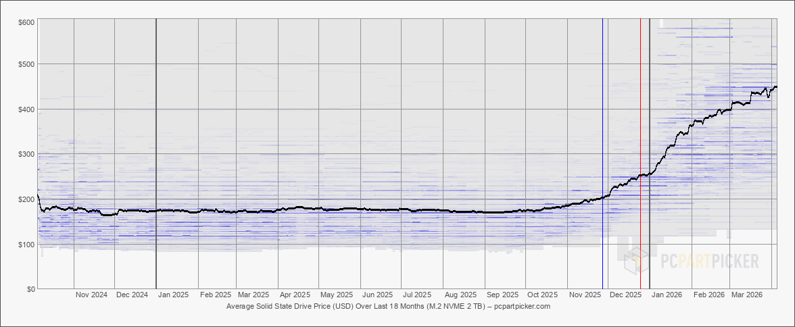

Planning My Home Server
Intro
Lately, I have been wanting to build a new home server. In my previous post, I listed self-hosted software that I was using. I am running my Docker applications / game servers from an old Dell All-in-one and my NAS / VPN / Syncthing from my Raspberry Pi 4. The Dell All-in-one has a mobile 4th gen i5 CPU and 8GB of DDR3 ram. The performance from these computers has been sufficient, but I would like to upgrade and build a new home server at my apartment.
 My Raspberry Pi 4 with a "penny cooler".
My Raspberry Pi 4 with a "penny cooler".
New hardware
I have always wanted to own a server rack for my home server. The industry standard format for server racks is 19 inches wide. However, fitting a standard server rack into my apartment is not ideal, especially if I have to move. A few months ago, I saw several videos and social media posts about a 10 inch wide rack. This smaller format is perfect for my needs.
 Source: Jeff Geerling (Link)
Source: Jeff Geerling (Link)
Compute
For my new server, I will need a computer(s) to run my Docker applications and other services. Given the 10 inch rack constraint, I considered two options: a DIY computer using an ITX motherboard or a micro form factor (MFF) from Lenovo or Dell. I am leaning more towards the Lenovo ThinkCentre Tiny MFF series due to the simplicity of pre-built, PCIe slot, and looks. I plan to use the PCIe slot to upgrade networking. I will be at the Belton hamfest next weekend and will be on the lookout for any used computers and parts. Ideally, I can find a 7th-9th gen i5 computer with 16-24GB of RAM.
One drawback of using an MFF is the power supply. Both Dell and Lenovo MFF computers do not have integrated power supplies, so they require an external power brick. Recently, I found this project which is a USB-C PDU for MFF computers. Hopefully, the project matures by the time I build my new home server so I can use it.
NAS
In addition to Docker applications, I need to have a network attached storage (NAS) for my files and backups. I have a spare Raspberry Pi 5 which I could use for my new NAS. However, I might use another MFF computer for the NAS so I can run TrueNAS.
Given that this home server will be moved several times, I would prefer to build a fully, solid state drive NAS but that may be difficult with storage prices. I need to wait some time for storage prices to come down or go with hard drives if a better deal comes up. My current home server has 20TB of HDD storage with 6TB being used in the NAS. I would like to have at least 6TB for my new build. In addition to the storage drives, I will need to buy or 3D print a mount. I could also consider buying a normal NAS enclosure and putting it on a tray.

Source: PCPartPicker Price Trends (Link)Remaining parts
Lastly, I need to purchase the rack, networking switch, and UPS. There are several metal racks available on Amazon for around $100, or I could 3D print my own rack.
New software
With the upgraded hardware, I would like to experiment with new software. Firstly, I need a new Docker application management software. Right now, Dockge is used to create, update, and deploy my Docker applications. However, it is not being maintained or updated. I need to switch to Komodo, Portainer, Arcane, or Dockhand.
Additionally, I may consider using Proxmox to create VMs for each sets of tasks. One VM could be used for my Docker applications, another for Minecraft or game servers, and the last one could be for personal development projects.
Also, I recently set up Backrest / restic on my main home server using Backblaze B2. I would like to move this backup to my new server so I do not have to pay monthly for cloud storage.
Conclusion
In a future post, I will detail the final build and include photos. I have some hardware already purchased, but today's inflated hardware prices make it difficult to justify buying the remaining hardware right now. Maybe I can find a good deal at the hamfest next weekend. However, it may take a few months or longer before the next home server post will come out.